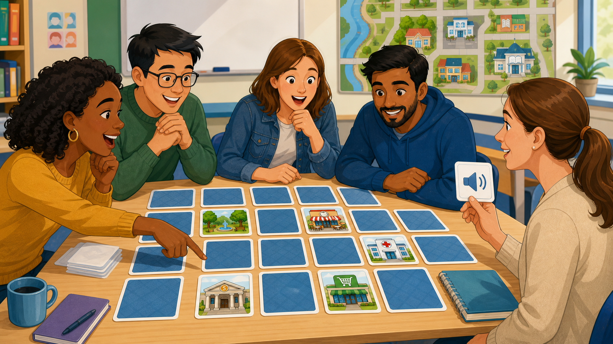

01
Shared from Course 1
Personal Information Roulette
Spin roles and questions to practice personal information exchanges.
Open activityBasic English Course 2
This section temporarily reuses the Basic English Course 1 games while the Course 2 game sequence is prepared.
Temporary game bank
These games are available as a starting point. They can be replaced or adapted later for weather, shopping, travel, past experiences, memories, and food.
Spin roles and questions to practice personal information exchanges.
Open activity
Spin a roulette, describe illustrated location cards, and reveal model sentences.
Open activity
Exchange objects, identify classroom items, confirm ownership, and present findings.
Open activity
Spin student and character roulettes, ask yes/no questions, and describe people.
Open activity
Say three routine sentences, ask follow-up questions, and guess the lie.
Open activity
Spin student and question roulettes to practice routines, habits, sports, and frequency adverbs.
Open activity
Two teams find 20 image pairs, listen, pronounce each activity, and compete for points.
Open activity
Teacher chooses a map, the roulette chooses a student and a destination, and the student gives spoken directions.
Open activity
Two teams find 12 image pairs, listen, and pronounce the place vocabulary for points.
Open activity